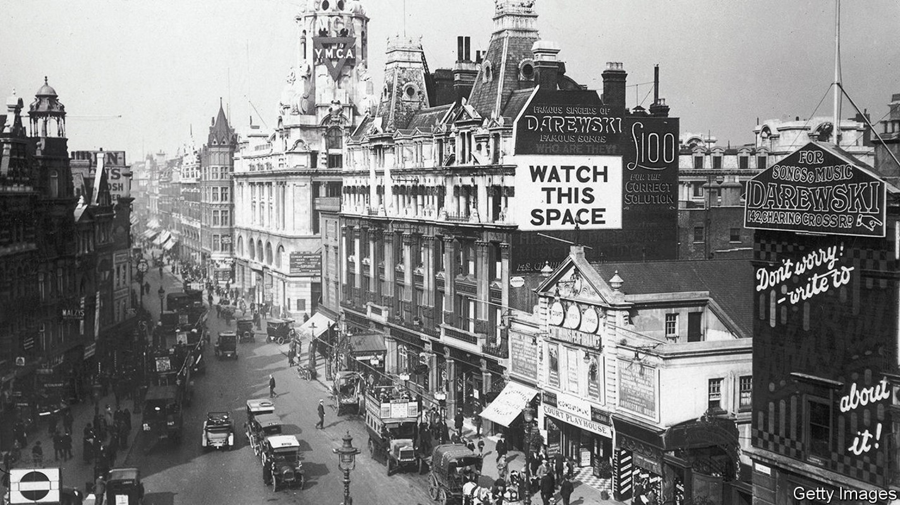
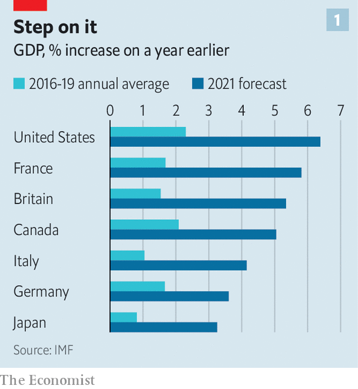
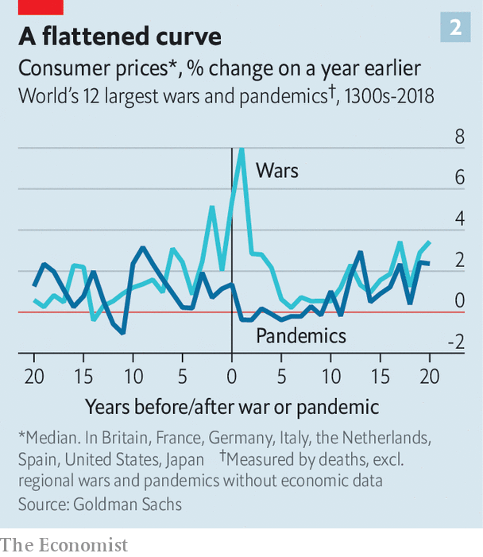

People spend more, take more risks—and demand more of politicians

THE CHOLERA pandemic of the early 1830s hit France hard. It wiped out nearly 3% of Parisians in a month, and hospitals were overwhelmed by patients whose ailments doctors could not explain. The end of the plague prompted an economic revival, with France following Britain into an industrial revolution. But as anyone who has read “Les Misérables” knows, the pandemic also contributed to another sort of revolution. The city’s poor, hit hardest by the disease, fulminated against the rich, who had fled to their country homes to avoid contagion. France saw political instability for years afterwards.
Listen to this story.Enjoy more audio and podcasts on iOS or Android.
Listen to this story
Save time by listening to our audio articles as you multitask

Today, even as covid-19 rages across poorer countries, the rich world is on the verge of a post-pandemic boom. Governments are lifting stay-at-home orders as vaccinations reduce hospitalisations and deaths from the virus. Many forecasters reckon that America’s economy will grow by more than 6% this year, at least four percentage points faster than its pre-pandemic trend. Other countries are also in for unusually fast growth (see chart 1). The Economist’s analysis of GDP data for the G7 economies going back to 1820 suggests that such a synchronised acceleration relative to trend is rare. It has not happened since the post-war boom of the 1950s.
The situation is so unfamiliar that economists are turning to history for a sense of what to expect. The record suggests that, after periods of massive non-financial disruption such as wars and pandemics, GDP does bounce back. It offers three further lessons. First, while people are keen to go out and spend, uncertainty lingers. Second, crises encourage people and businesses to try new ways of doing things, upending the structure of the economy. Third, as “Les Misérables” shows, political upheaval often follows, with unpredictable economic consequences.
Take consumer spending first. Evidence from earlier pandemics suggests that during the acute phase people behave as they have during the past year of covid-19, accumulating savings as spending opportunities vanish. In the first half of the 1870s, during an outbreak of smallpox, Britain’s household-saving rate doubled. Japan’s saving rate more than doubled during the first world war. In 1919-20, as the Spanish flu raged, Americans stashed away more cash than in any subsequent year until the second world war. When that war hit, savings rose again, with households accumulating additional balances in 1941-45 worth some 40% of GDP.

History also offers a guide to what people do once life gets back to normal. Spending rises, prompting employment to recover, but there is not much evidence of excess. The notion that people celebrated the end of the Black Death by “wild fornication” and “hysterical gaiety”, as some historians suppose, is (probably) apocryphal. The 1920s were far from roaring, at least at first. On New Year’s Eve 1920, after the threat of Spanish flu had decisively passed, “Broadway and Times Square looked more like the old days”, according to one study, but America nonetheless felt like “a sick and tired nation”. A recent paper by Goldman Sachs, a bank, estimates that in 1946-49 American consumers spent only about 20% of their excess savings. That extra spending certainly aided the post-war boom, though the government’s monthly “business situation” reports in the late 1940s were nonetheless filled with worry of an impending slowdown (and indeed the economy went into recession in 1948-49). Beer consumption actually fell. Consumers’ caution may be one reason why there is little evidence of pandemic-induced surges in inflation (see chart 2).
The second big lesson from post-pandemic booms relates to the “supply side” of the economy—how and where goods and services are produced. Though, in aggregate, people appear to be less keen on frivolity following a pandemic, some may be more willing to try new ways of making money. Historians believe the Black Death made Europeans more adventurous. Piling on to a ship and setting sail for new lands seemed less risky when so many people were dying at home. “Apollo’s Arrow”, a recent book by Nicholas Christakis of Yale University, shows that the Spanish flu pandemic gave way to “increased expressions of risk-taking”. Indeed a study for America’s National Bureau of Economic Research, published in 1948, found that the number of startups boomed from 1919. Today new business formation is once again surging across the rich world, as entrepreneurs seek to fill gaps in the market.
Other economists have drawn a link between pandemics and another change to the supply side of the economy: the use of labour-saving technology. Bosses may want to limit the spread of disease, and robots do not fall ill. A paper by researchers at the IMF looks at a number of recent outbreaks of diseases, including Ebola and SARS, and finds that “pandemic events accelerate robot adoption, especially when the health impact is severe and is associated with a significant economic downturn.” The 1920s were also an era of rapid automation in America, especially in telephone operation, one of the most common jobs for young American women in the early 1900s. Others have drawn a link between the Black Death and Johannes Gutenberg’s printing press. There is as yet little hard evidence of a surge in automation because of covid-19, though anecdotes abound.
Whether automation deprives people of jobs, however, is another matter. Some research suggests that workers in fact do better in the aftermath of pandemics. A paper published last year by the Federal Reserve Bank of San Francisco finds that real wages tend to rise. In some cases this is through a macabre mechanism: the disease culls workers, leaving survivors in a stronger bargaining position.
In other cases, however, rising wages are the product of political changes—the third big lesson of historical booms. When people have suffered in large numbers, attitudes may shift towards workers. That seems to be happening this time: policymakers across the world are less interested in reducing public debt or warding off inflation than they are in getting unemployment down. A new paper from three academics at the London School of Economics also finds that covid-19 has made people across Europe more averse to inequality.
Such pressures have, in some instances, exploded into political disorder. Pandemics expose and accentuate pre-existing inequalities, leading those on the wrong side of the bargain to look for redress. Ebola, in 2013-16, increased civil violence in West Africa by 40%, according to one study. Recent research from the IMF considers the effect of five pandemics, including Ebola, SARS and Zika, in 133 countries since 2001. It finds that they led to a significant increase in social unrest. “It is reasonable to expect that, as the pandemic fades, unrest may re-emerge in locations where it previously existed,” researchers write in another IMF paper. Social unrest seems to peak two years after the pandemic ends. Enjoy the coming boom while it lasts. Before long, there may be a twist in the tale. ■
A version of this article was published online on April 25th, 2021